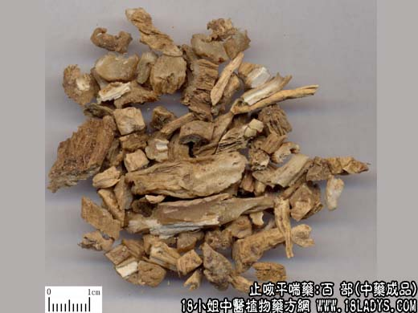

原文连接:https://www.daquan.com/post/2051.html



本品为常用中药，《名医别录》列为中品。
别名：百部根、百部草。
来源：为百部科百部属多年生草本植物蔓生百部（小百部）和对叶百部（大百部）或直立百部（小百部）的干燥块根。
产地：小百部：主产于安徽、浙江、江苏、山东等地，四川、湖北、湖南、广东、江西、河南等地亦产。大百部主产于江西、湖北、云南、贵州、四川等地。
性状鉴别：小百部：块根略呈纺锤形，多干缩弯曲，长约4～18厘米，直径约1厘米。表面土黄色或淡黄白色，极皱缩，具不规则的纵皱沟棱，质硬易折断。断面显角质，微有光亮，中心柱木质心多扁缩。气微，味先甜后苦。
大百部：块根较粗长，长约12～25厘米，直径约1～2里厘米，余与下百部相同。以根粗壮均匀，内碴角质光亮者为佳。
主要成分：含生物硷。直立百部根含直立硷等。对叶百部根含对叶百部硷等。蔓生百部根含百部硷、百部次硷等。
功效与作用：止咳、杀虫，其原理为：1、抗结核。体外试验对人形结核杆菌有抑制作用，对实验结核病有一定疗效。
2、镇咳。临床观察有效，实验方面还未能充分证实。目前已知的事其生物硷能降低呼吸中枢的兴奋性，从而可能有助于抑制咳嗽反射。
3、杀虫。乙醇浸液和水浸液对头虱、衣虱、阴虱、动物虱等有灭杀作用，乙醇浸液较水浸液作用强。又有毒杀椿象、天牛等多种农业害虫。50%的百部药液能灭杀鼠蛲虫。
4、抗菌。对大肠杆菌、绿脓杆菌、肺炎双球菌、痢疾杆菌等有抑制作用。
5、抗病毒。动物实验证实其煎剂能降低亚洲甲型流感病毒对小鼠的致病力，对已感染的小鼠有治疗作用。
此外，以堇色毛癣菌等多种皮肤真菌有不同程度的抑制作用。
炮制：切咀，生用或蜜制。
性味：甘苦、微温。
归经：入肺经。
功能：润肺止嗽，灭虱杀虫。
主治：肺劳咳嗽，寒热咳嗽，蛔虫蛲虫，外敷皮肤疥癣，浓煎外擦灭诸虱。
临床应用：前人认为本品能治新久各种咳嗽，久咳（慢性咳嗽）者尤其适用，由肺热引起的新咳、痰喘也可用。现代多用于：
1、治肺结核。辅助其他抗结核药，可配白芨、沙参、党参、川贝、栝萎、麦冬、杏仁等为丸，长期服食，对改善症状有一定帮助。
2、治百日咳。常配白前、川贝、沙参、紫菀等，水煎服，方如百部煎，又可用百日咳饮（此方在痉咳期疗效较显著）。以上两方可治小儿急性气管炎。
3、治蛲虫病。用灌肠法给药，单用百部煎液，或配苦楝子根皮、乌梅等煎水（用50%煎液），每次约5～6汤匙作保留灌肠（晚上进行）连用2～4天，能加强内服药的驱虫效果。
4、外用灭虱和止痒。用百部粉（酒炒）或其煎液局部外敷。
用量：内服6~18g，治肺结核用量宜较大。外用适量。
处方举例：百部煎：百部9g，白前6g，紫菀9g，川贝6g，沙参9g，陈皮4.5g，甘草4.5g，水煎服。
百日咳：百部、沙参、川贝、白前各3g，加水400毫升，浓缩为200毫升，一日分六次饮。